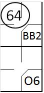
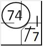
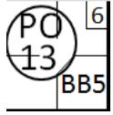
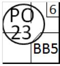

Putting out a runner
|  |
a) Any runner is out when " he or the next base is tagged before he touches the next base, after he has been forced to advance by reason of the batter becoming a runner " [OBR 5.09(b )( 6)]. With first base occupied due to a base on balls, the batter hits a ground ball to the shortstop, who assists the second baseman who catches the ball and tags second base, anticipating the arrival of the forced runner.
|
|  |
b) Any runner is out when he " is tagged, when the ball is alive, while off his base " [OBR 5.09(b )( 4)]. With all bases clear, the batter hits a single to left field; after reaching first base he attempts to reach second, but is put out after being tagged by the second baseman, who caught the ball thrown by the left fielder. |
A runner can be tagged in a so called pick-off: to catch (a base runner) off base and put out with a quick throw as from the pitcher or catcher, often to a specified base. The symbol used is PO followed by the fielder who made the assist and the fielder who made the out. In the upper right corner put the number indicating the batting order of the batter in the batter’s box.
|  |
With a runner on first base and the sixth batter at bat, the pitcher throws to the first baseman, who tags the runner as he attempts to return to the base (pick-off play).
|
|  |
With a runner on first base and the sixth batter at bat, the catcher throws to the first baseman, who tags the runner as he attempts to return to the base (pick-off play).
|